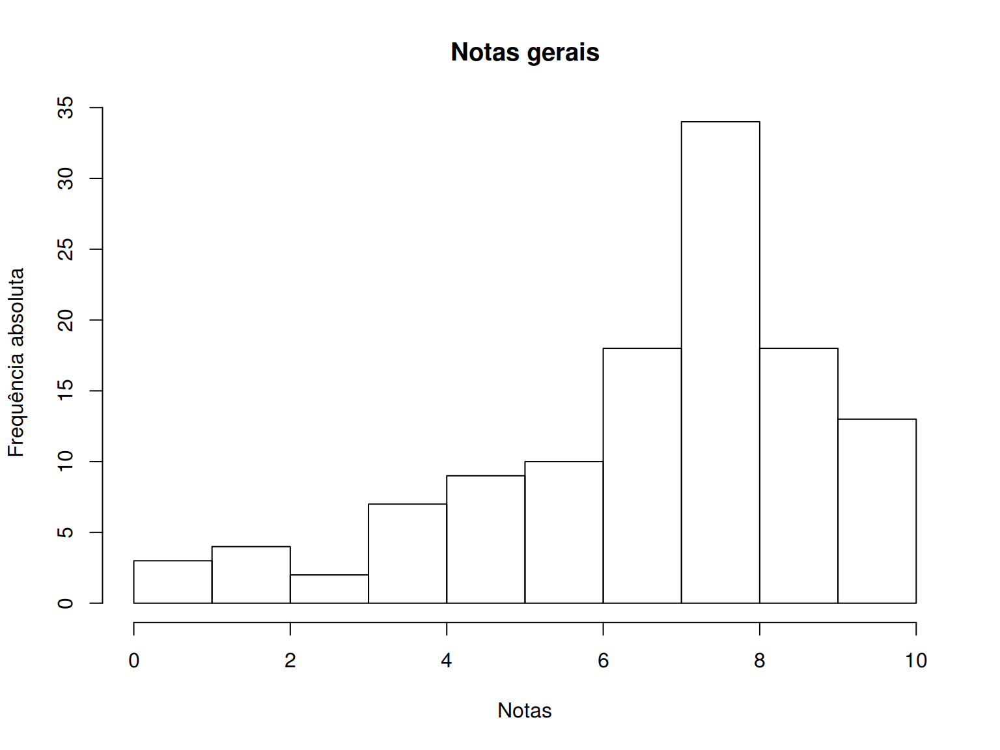
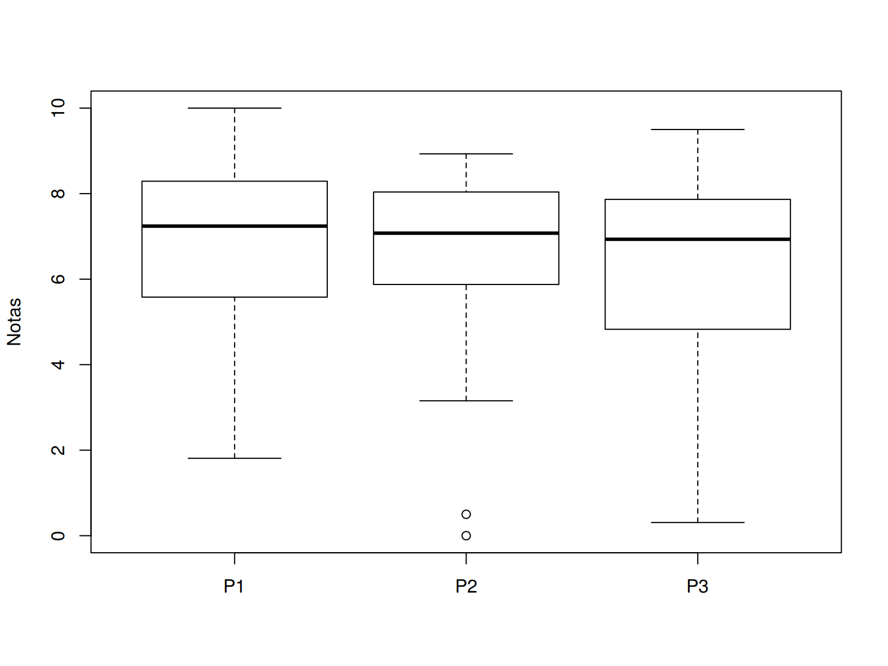

Notas
Histograma e box plot geral
## Grafico geral das notas
breaks <- 0:10
## table(cut(notas$S1, breaks = breaks,
## right = FALSE, include.lowest = TRUE))
## Junta notas de todas as sabatinas em um único vetor
notas.all <- do.call(c, notas[, notas.col, drop = FALSE])
hist(notas.all, breaks = breaks, right = FALSE, include.lowest = TRUE,
main = "Notas gerais", xlab = "Notas", ylab = "Frequência absoluta")
## boxplot(notas.all, horizontal = TRUE, ylim = c(0, 10),
## col = "lightgray", add = TRUE, at = 1)Resumo dos cinco números, média, desvio-padrão, e número de provas não realizadas (NA):
statm <- function(x){
res <- c(fivenum(x),
mean(x, na.rm = TRUE),
sd(x, na.rm = TRUE),
sum(is.na(x)))
names(res) <- c("Min", "Q1", "Q2", "Q3", "Max", "Média", "s", "NAs")
return(res)
}
round(statm(notas.all), 2) Min Q1 Q2 Q3 Max Média s NAs
0.00 5.29 7.10 8.00 10.00 6.55 2.37 30.00 Resumos por prova
Box plot de cada prova
## Boxplots comparando as notas entre sabatinas
boxplot(notas[, notas.col], ylim = c(0, 10), ylab = "Notas")
Resumo dos cinco números, média, desvio-padrão, e número de provas não realizadas (NA):
round(apply(notas[, notas.col, drop = FALSE], 2, statm), 2) P1 P2
Min 1.81 0.00
Q1 5.32 5.50
Q2 7.14 7.01
Q3 8.29 8.00
Max 10.00 8.74
Média 6.71 6.37
s 2.45 2.31
NAs 13.00 17.00Notas individuais
kable(notas[, c(1, notas.col)], align = "c", digits = 2)| Matricula | P1 | P2 |
|---|---|---|
| 20149114 | NA | 3.15 |
| 20159136 | 7.28 | 5.08 |
| 20159322 | 4.60 | 7.01 |
| 20159350 | NA | NA |
| 20159352 | NA | NA |
| 20159393 | NA | NA |
| 20159409 | 10.00 | NA |
| 20159417 | 4.27 | 5.29 |
| 20159775 | 7.02 | 6.20 |
| 20159826 | 6.83 | 6.97 |
| 20159858 | 7.37 | 4.08 |
| 20159999 | NA | NA |
| 20160023 | 9.17 | 5.03 |
| 20160194 | 5.54 | 7.25 |
| 20160203 | 7.89 | 5.72 |
| 20160204 | 5.62 | 8.33 |
| 20160205 | 3.11 | NA |
| 20160206 | 10.00 | 7.48 |
| 20160208 | 7.14 | 7.80 |
| 20160209 | NA | NA |
| 20160210 | 9.98 | 8.62 |
| 20160211 | 6.62 | 3.83 |
| 20160212 | NA | NA |
| 20160213 | 7.24 | 8.65 |
| 20160214 | 1.81 | 8.07 |
| 20160215 | 5.10 | 6.97 |
| 20160216 | 6.66 | 8.49 |
| 20160217 | 10.00 | 7.59 |
| 20160218 | 6.05 | 6.47 |
| 20160219 | 9.98 | 8.54 |
| 20160220 | 9.42 | 7.95 |
| 20160221 | 7.14 | 7.08 |
| 20160222 | 3.15 | 6.17 |
| 20160223 | 7.58 | 8.74 |
| 20160224 | 9.27 | NA |
| 20160225 | 7.45 | 6.03 |
| 20160226 | 7.10 | 7.53 |
| 20160227 | 1.81 | 0.50 |
| 20160228 | NA | NA |
| 20160229 | 3.48 | 0.00 |
| 20160230 | 3.85 | 7.10 |
| 20160231 | 8.84 | 8.00 |
| 20160232 | 1.87 | NA |
| 20160233 | 2.20 | 4.90 |
| 20160234 | 7.62 | NA |
| 20160235 | 6.87 | 8.51 |
| 20160236 | NA | NA |
| 20160237 | 7.85 | 8.22 |
| 20160238 | 8.69 | 0.00 |
| 20160239 | 9.71 | 8.00 |
| 20160240 | 7.43 | 6.20 |
| 20160242 | 7.74 | 6.80 |
| 20160304 | NA | NA |
| 20162949 | NA | NA |
| 20165725 | NA | NA |
| 20165740 | NA | NA |

Este conteúdo está disponível por meio da Licença Creative Commons 4.0